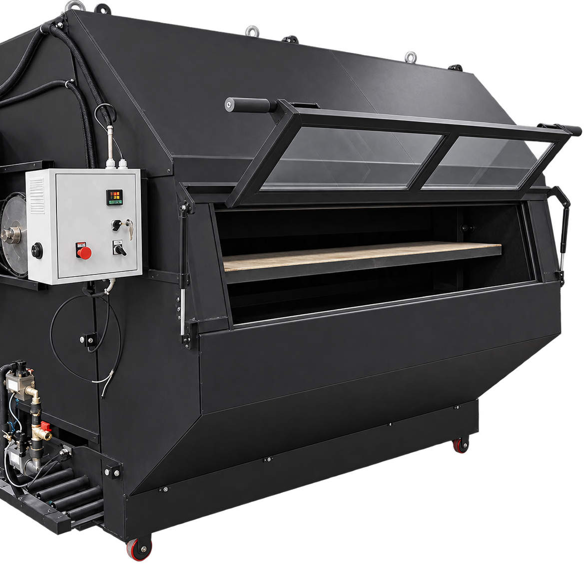
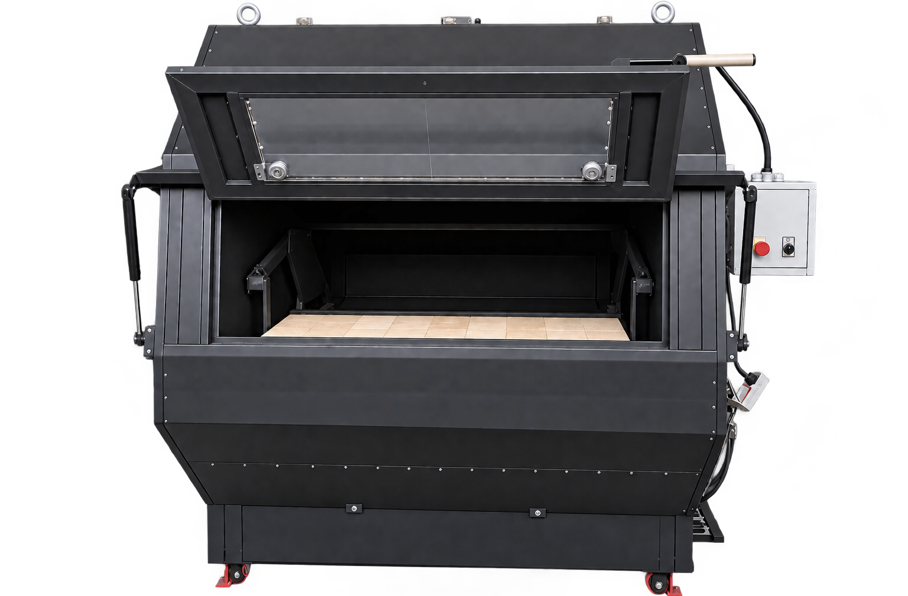
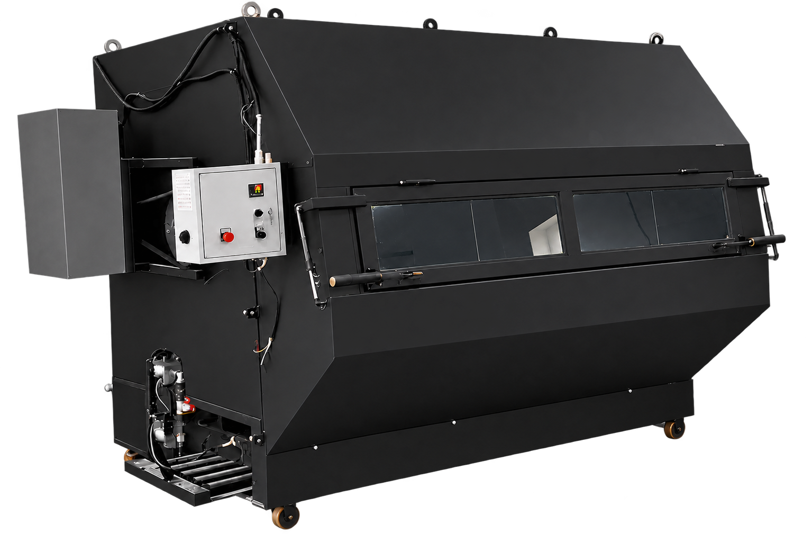
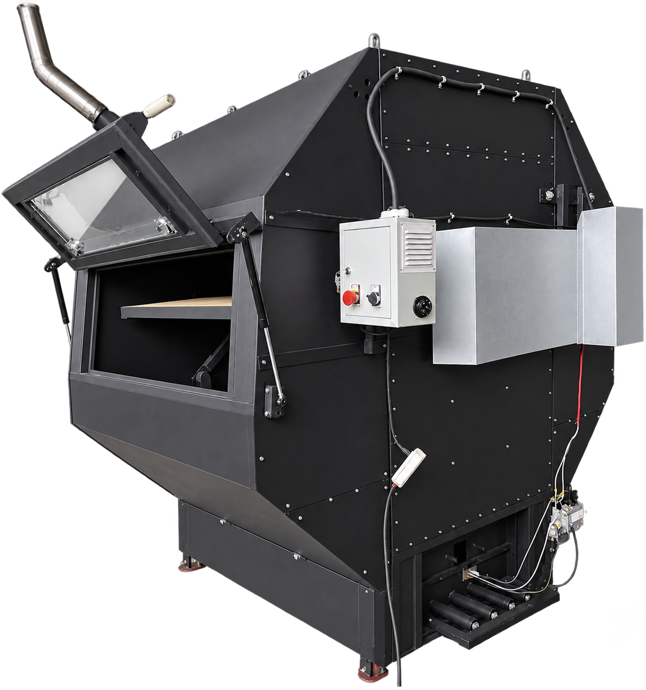

Газовая люлечная печь «Фарн-180»
Ротационная подовая печь с инфракрасным нагревом для ремесленных пекарен
Высокопроизводительная газовая печь люлечного типа для выпечки формового хлеба, лаваша, сдобы и ремесленных изделий. Оснащена керамическими инфракрасными горелками, встроенной системой безопасности по ГОСТу и экономичным расходом природного газа.
Вместимость (за раз):
120–180 шт. (хлеб-кирпич) / 40–80 шт. (лаваш)
Тип нагрева:
Керамическая инфракрасная горелка (Газ)
Расход газа:
3 м³/ч
Мощность:
50 кВт
Внешние размеры (высота / ширина / глубина):
200,0 / 150,0 / 180,0 см
Вес:
800 кг
Гарантия:
3 года
ПОЗВОНИТЬ НАМ
+7 (999) 999-99-99
Отдел продаж (Пн-Пт)